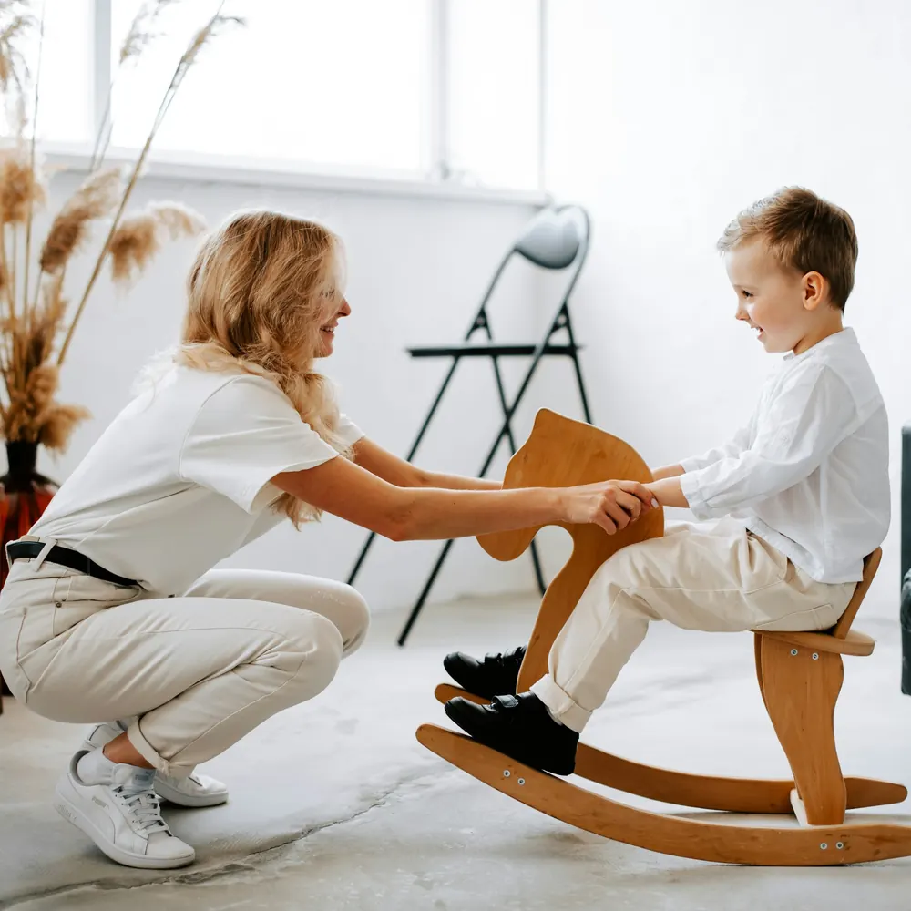
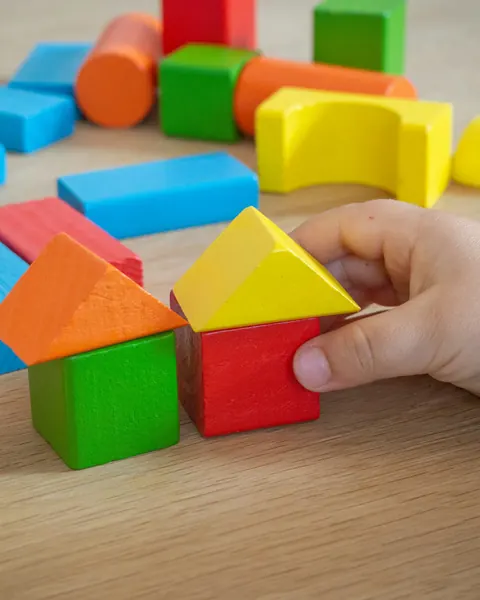
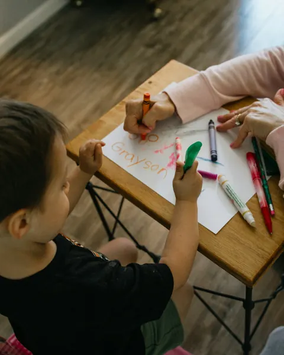
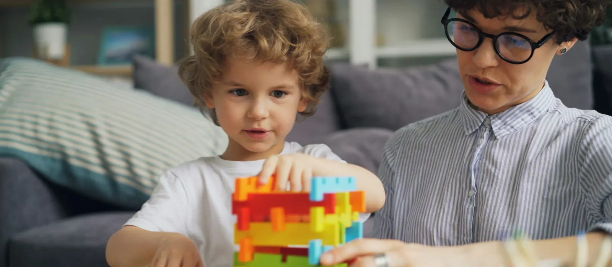

Neurodesarrollo · Terapias · Familia
Cada pequeño avance merece ser acompañado
En Neuroavanzar, profesionales de distintas disciplinas valoran y acompañan el desarrollo de cada niño en Bucaramanga, y trabajan con su familia para que nadie recorra el proceso a solas.

Especialidades que trabajan en conjunto
Cada especialidad aporta una mirada distinta. Después de la valoración, los profesionales sugieren cuáles pueden acompañar a tu hijo y con qué frecuencia.
Lista demostrativa: se ajusta a los servicios que preste cada institución.
-

Neuropsicología infantil
Valoración de procesos como la atención, la memoria, el lenguaje y la planificación, para comprender cómo aprende y se organiza cada niño.
Preguntar por neuropsicología -
Terapia ocupacional
Acompañamiento en el juego, la motricidad fina, la organización sensorial y las actividades de la vida diaria, como vestirse o comer.
Preguntar por terapia ocupacional -
Fonoaudiología
Apoyo en comunicación, lenguaje, habla y alimentación, de acuerdo con lo que el profesional encuentre en la valoración.
Preguntar por fonoaudiología -

Psicología infantil
Un espacio para las emociones, la conducta y las relaciones del niño, con orientación para padres y cuidadores.
Preguntar por psicología infantil -
Acompañamiento familiar
Sesiones de orientación para que la familia entienda el proceso, resuelva dudas y sepa cómo participar desde casa.
Preguntar por acompañamiento familiar -
Evaluación del desarrollo
Una mirada inicial al desarrollo motor, comunicativo, cognitivo y social, que ayuda a decidir qué especialidades pueden aportar.
Preguntar por la evaluación
Un proceso pensado para cada familia
-
Escuchamos a la familia
Conversamos sobre lo que observan en casa y en el colegio, sus preguntas y lo que esperan del acompañamiento.
-
Realizamos una valoración profesional
Los profesionales observan y evalúan al niño con las herramientas que consideren pertinentes para su edad y su situación.
-
Definimos un plan de acompañamiento
Con lo que encuentran, proponen especialidades, frecuencia y objetivos, y los revisan con la familia antes de empezar.
La valoración y el plan dependen de cada caso y del criterio de los profesionales. No todos los niños recorren las mismas etapas ni al mismo ritmo.

Comprender antes de intervenir
Dos niños de la misma edad pueden necesitar cosas muy distintas. Observar cómo juega, cómo se comunica y cómo se relaciona cada uno permite que el acompañamiento parta de sus fortalezas y no de una lista genérica.
Por eso explicamos a la familia lo que vemos y por qué proponemos cada paso.
Para las familias
Respuestas generales para dar el primer paso con tranquilidad. Las indicaciones específicas las da el equipo según cada caso.
Cómo prepararse para una primera valoración
Al solicitar información, el equipo te contará cómo se agenda, cuánto puede durar y quién estará presente. Ayuda llegar con tus preguntas anotadas y con ejemplos concretos de lo que has observado en el día a día.
Qué información puede ser útil compartir
Lo que has notado en casa, en el colegio o en el juego; desde cuándo; y lo que ya han intentado. Si tienes informes de otros profesionales, pregunta si conviene llevarlos.
En este sitio no pedimos diagnósticos ni historias clínicas: esa información se conversa directamente con los profesionales.
Cómo participa la familia en el proceso
La familia participa en la conversación inicial, recibe las conclusiones de la valoración y acuerda con el equipo cómo acompañar desde casa. La forma y la frecuencia de esa participación se definen en cada plan.
Cómo solicitar información sobre las especialidades
Completa el formulario indicando la especialidad que te interesa. Si aún no sabes cuál, elige «Quiero orientación» y el equipo te ayudará a ubicar el primer paso.
El primer paso comienza con una conversación
Cuéntanos qué te gustaría saber sobre las especialidades o el proceso de atención. Te respondemos por el medio que prefieras.
Hablar con nuestro equipo- Ubicación
- Bucaramanga y área metropolitana
- Dirección
- Horarios